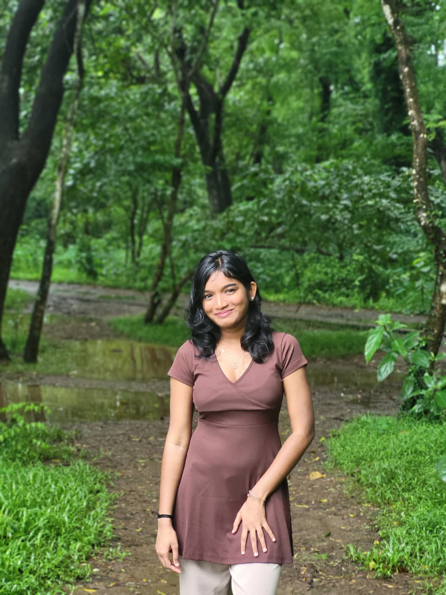

Web Developer & IT Student @ CUSAT
I am an enthusiastic IT student with a strong passion for web development. I love building clean, user-friendly websites and exploring new technologies to turn creative ideas into real-world projects.

I am a third-year B.Tech Information Technology student at CUSAT, specializing in IoT and full-stack development. My passion lies in building systems that work where the internet doesn't.
My flagship project involves developing a LoRa mesh safety network for fishermen, ensuring reliable communication in deep-sea environments. I thrive at the intersection of embedded hardware and scalable web backends.
School of Engineering, CUSAT (Cochin University of Science and Technology)
CGPA: 8.3 / 10
Serving as Web Developer for TEDx CUSAT, responsible for building and maintaining the event website and web-based experiences.
Contributed to end-to-end web application development spanning frontend interfaces and backend services.
Completed an internship focused on cloud computing at the GYAAN Lab, gaining exposure to cloud architectures, deployment models, and applied cloud computing concepts.
Working with MATLAB for technical computing and engineering problem solving. Exploring data visualization, algorithm implementation, and analytical computing. Applying programming concepts for numerical and technical applications.
Developed responsive user interfaces using HTML, CSS, and JavaScript. Built backend services and APIs using Python and Node.js. Worked on full-stack development integrating frontend with databases and backend logic. Designed clean UI/UX and optimized application performance.
Designed a hardware-software bridge for zero-connectivity environments, using a decentralized sub-GHz mesh network where every boat acts as a data hop. Addressed the "Invisible Fleet" problem and built a Digital Twin software ecosystem for real-time tracking and alerts.
🏆 1st Place Winner, FOUNDRY Product Hunt by CUSAT
Low-Cost GNSS Guidance System for Precision Agriculture. Developed a dual-receiver system with real-time reliability scoring. Achieved cost-efficient design compared to traditional RTK systems.
🏆 Top 3 in HackEuropa
AI-Powered Spice Purity Scanner. Designed a portable AI-based system to detect adulteration in spices using optical sensing and image analysis with spectroscopy sensors.
🏆 2nd Place, Vismayam Ideathon
Location-Based Travel Planner recommending destinations based on user location via Geolocation API and Haversine formula.
🏆 Best Project, TinkerHer Hackathon
Local Worker Discovery Platform. Built a location-based platform to discover nearby informal workers using interactive maps and ratings.
AI-powered backend automation platform converting natural language rules into structured JSON using AI for automated decision logic.
Smart Surveillance with Motion-Based Video Optimization. Developed a motion detection system using OpenCV background subtraction to reduce CCTV storage usage.
Campus Safety Website designed for reporting incidents and accessing emergency contacts, featuring a WhatsApp-based emergency feature.
Interactive Web Experience. A playful web application testing user patience through UI challenges like reverse typing and moving buttons.
Looking to build resilient hardware systems or scalable software? Feel free to reach out to me.